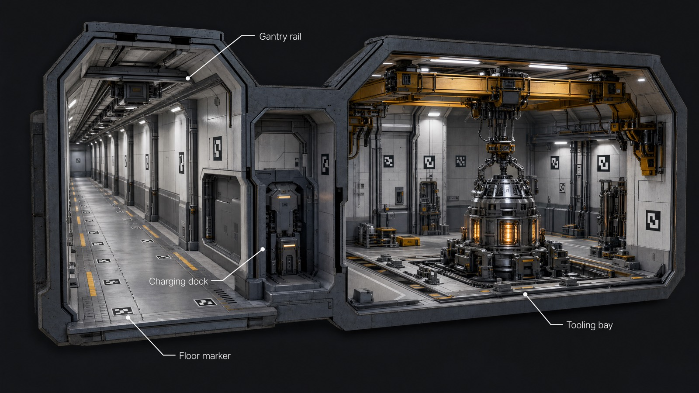
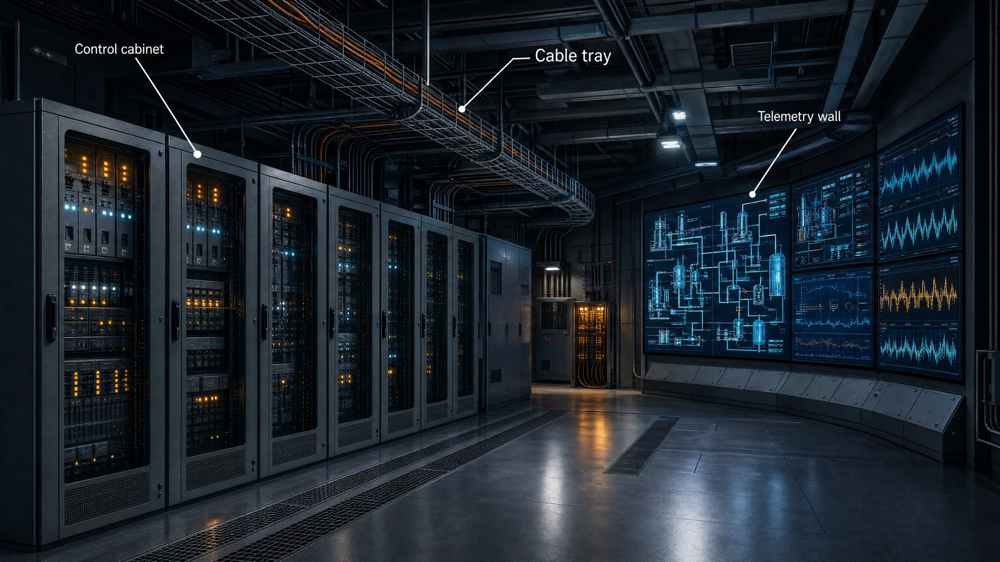
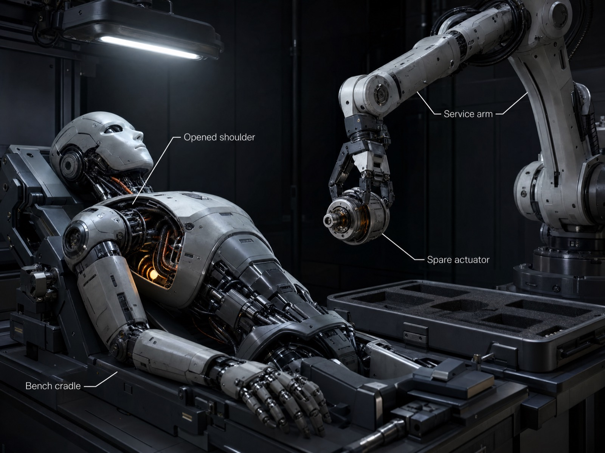

Nothing on this page is a real facility, and that is the point. A specialist cannot learn deep experience from records the world never kept — so the machine constructs worlds in which that experience can be had: situations with physics, constraints, consequences, and enough internal consistency that a decision made inside them has something real to collide with.




One failure, followed through
Depth means consequences. The world doesn't just contain equipment — it contains what happens when equipment fails, and what a competent response looks like, step by step, to the restored state:


Why a specialist needs this
Decision experience is situations with trade-offs and consequences attached. Worlds like this one are where those situations come from: a scenario is a region of the decision space to master, not a fact to memorize. In our vision work, the same principle — training on focused generated worlds — moved small models drastically in the target direction without losing their general skill; the studies on the research page measure how far that carries into business decisions.
This shows
- Depth and internal consistency: one seed, one coherent world — sites, systems, failure modes and repair cycles that reference each other correctly.
- What the training corpus is made of — followed-through experience, not isolated text.
the full world sample — chapters, spec sheets, repair doctrine — available on request · hello@truna.ai